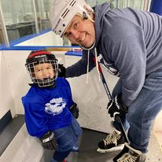
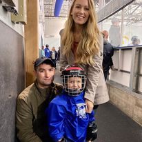
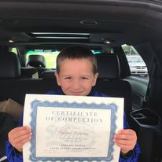

Rylands first time on the ice was November 2nd 2019 just 3 days after his 4th birthday. It was his first day becoming a Meramec Shark (family tradition). Naturally nervous at first Ryland was joined by his Great Uncle Justin who had plenty of experience raising a hockey player of his own.
  